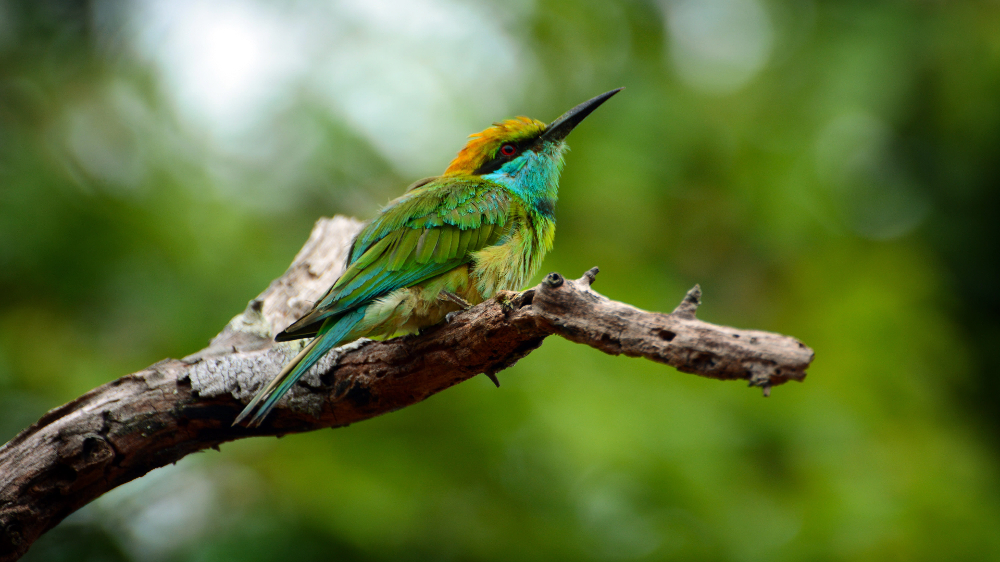
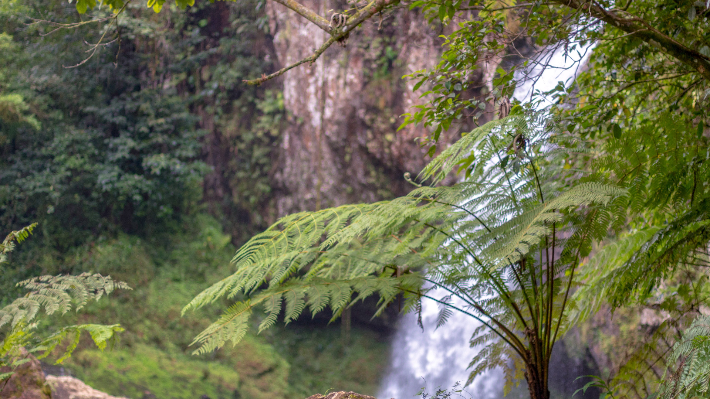
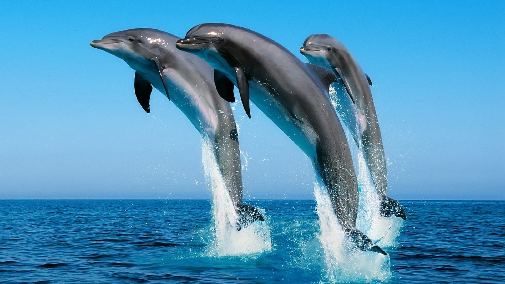
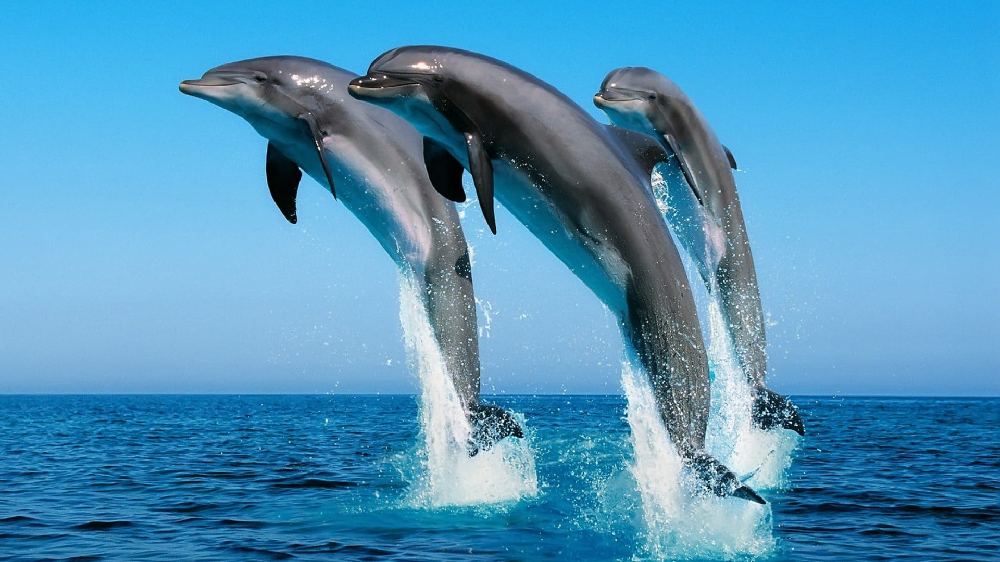

- Endemic Species: Sri Lanka has a high level of endemism, meaning many species are found nowhere else in the world. This includes the Sri Lankan elephant, the Sri Lankan leopard, and various species of birds, reptiles, and amphibians.
- Sri Lankan Elephant: The Sri Lankan elephant (Elephas maximus maximus) is the largest of the Asian elephants and is considered an iconic symbol of the country. Sri Lanka has one of the highest densities of wild elephants in Asia.
- Sri Lankan Leopard: The Sri Lankan leopard (Panthera pardus kotiya) is a subspecies of leopard found only in Sri Lanka. Known for its distinctive appearance and behavior, the Sri Lankan leopard is a flagship species for conservation efforts in the country.
- Unique Amphibians and Reptiles: Sri Lanka is home to a variety of unique amphibians and reptiles, including several endemic species. The island has a high diversity of frogs, lizards, and snakes, some of which are found nowhere else on Earth.




 
